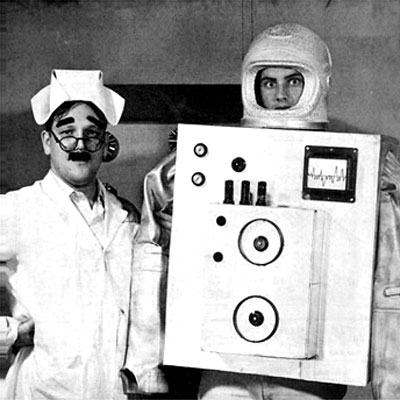
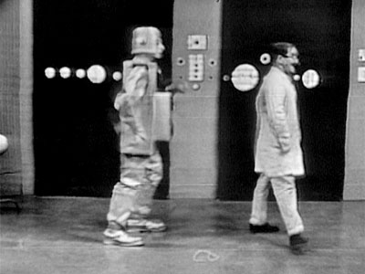
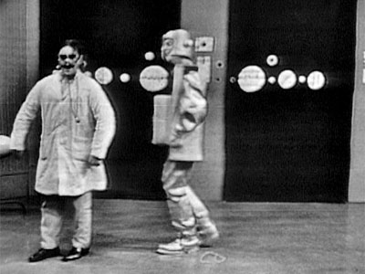
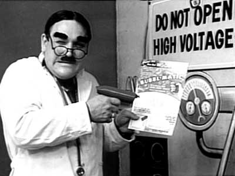
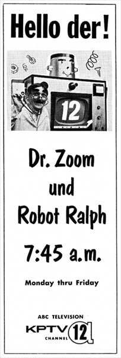
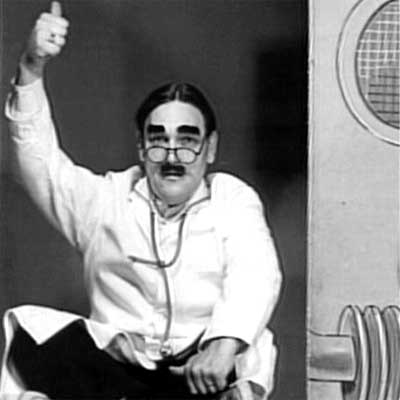
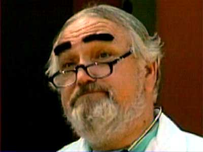

|
|
The Dr. Zoom Show
A versatile personality, the Doctor cures sponsors' ills with live commercial spots, contests, and personal appearances throughout the KPTV viewing area. Dr. Zoom's Cartoons are followed by the ever-popular King and Odie at 12:15 and Cartoon Castle at 12:30. Like a doctor's prescription, Cartoon Castle contains a combination of ingredients: Barney Bear, Casper and other kid-keeping personalities.
An Interview with Dr. Zoom "Unt haf you had your noodlebone checked today?" queries Dr. Zoom, local television's wildest looking kid show character. The kid murmurs "NO" and Dr. Zoom wiggles his Groucho Marx eyebrows. He places the business end of the world's least reliable stethoscope on the grinning youngster's head. "Now ve'll find out what you're thinking," enthuses Dr. Z. The "doctor" rolls his eyeballs as he listens intently. Then there is the squawk of recorded geese filling the studio. "Geese! Iss dat vat you were thinking about, geese?" exclaims the energetic Dr. Z, and lets out a fantastic cackle of laughter.
This sort of thing has been going on at KPTV for four years now and there are still as many adults as children getting a kick out of Dr. Zoom. As for the doc himself, he seems to get more kick out of it than anybody. For a long time I thought this muddled medico with the phony mustache and hilarious hair style (parted straight down the middle and floppy on the sides) was a masquerading Gene Brendler, KPTV staffer and "12 in the Morning" host. "That's what people think even now," Dr. Zoom told me over lunch, after his hour-long noon show. He'd traded his ridiculously long, baggy white coat, rubber stethoscope and graying tennis shows for a dark business suit, executive horn rim glasses and a pure Portland accent. Zoom transformed spoke: "Brendler was in a supermarket just a couple of days ago and a lady stopped him with the 'Hey I know who you are' hit. Brendler got all set to blush appropriately when this gal says, 'You're Dr. Zoom.' Brendler probably could have killed me right then." George Ross, a 1950 Grant High School graduate, an ex-paratrooper sergeant in the 82nd Airborne Division, and build not terribly unlike a fully armed Sherman tank, laughed gleefully over his soup. Ross no more resembles Brendler than Brendler looks like Charles de Gaulle. Brendler is not Dr. Zoom, and neither is De Gaulle. George Ross, partner and operator of a sober-sided collection agency, is.
Television takes two hours of his day five days a week. He arrives at the studio at 11 a.m., confers with the engineer on the sound effects he may need, gets his props in order and then turns himself into Dr. Zoom, a name his wife suggested when she glanced at a box of cereal. The day I visited the show, Ross sandwiched 12 commercials and three "plugs" into one cartoon-loaded hour. Dr. Zoom can be a very funny man, but there was little time for it that day. When the cartoons were on, most of the time Dr. Z was dashing in and out of the studio getting things ready for the next commercial. But there was time for "Naomi" his invisible piano player, to crash-land via recorded airplane. She played background music while Dr. Zoom read his "Hello Dere's" to fans who had written in. He also promises his letter writing audience a picture of himself "suitable for idolizing and framing." George Ross played football in school, but he'd never messed with show biz at all. Yet when KPTV staff members (several of whom had gone to Grant with him) needed a new kiddy show character, they called George in to help them create one. Because George Ross had the reputation of being a very funny guy.
And so Dr. Zoom was born. He lasted six weeks. Ross figured the doc was dead and buried, but Dr. Zoom fooled him. The station brought him back to life shortly afterwards, and Zoom has been Zooming ever since, currently in the noon-time period. "I'm not working opposite any other kid shows at noon. I understand I'm rated second highest in that period. Sure, kids are in school then, but quite a few of them turn me on during the lunch hour in the cafeteria or someplace. "It's the cartoons that draw the kids. Popeye cartoons are the ones that are real hot. It costs a wad of money just to lease a series. At the kind of money the station has to pay, you can't blame them for running them again after a period of time. Ross was born and reared in Portland, as were his grandparents. He doesn't want to leave. And he wouldn't mind if television were a bigger part of his life than it is now. The collection agency takes up the major share of his time. (By the way, if this guy calls to collect a bill, pay it. When I say he's built like a tank, I mean a tank that's been exercising an awful lot). He an his family, including a son, 8, and a daughter, 7, live in Lake Oswego. The Oregonian,
November 22, 1965  New Children's Show on KPTV Ch. 12 The problem of man vs. the machine is demonstrated with a sort of wild gaiety each Monday through Friday morning on Dr. Zoom, KPTV's newest children's show. Dr. Zoom, the sturdy scientist on the left, built a robot, Ralph, to make life easier for himself. Unfortunately, Ralph now seems endowed with considerably more intelligence than his creator and is frequently running the show, correcting Dr. Zoom, and going his own way, backed up by Mr. Brain, an electronic thought machine. Dr. Zoom is produced and directed by Dick Paul, KPTV staff director. George Ross, who plays Dr. Zoom, is a co-author. TV Prevue Magazine, October 7, 1962
 
In
two
scenes from an episode
that was shot on kinescope, the  The good doctor makes the pitch for sponsor Bubbl-matic.   
This page last updated on August 25, 2025 |


|
Yesterday's KPTV Website design and content ©2003-2025 by Ron Dunevant, LLC unless otherwise noted. |